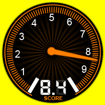
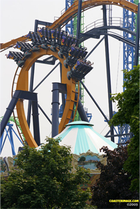

BATMAN: THE RIDE
<<< back to SIX FLAGS GREAT AMERICA
SPECS
Max Height: 109 ft.
Max Speed: 50 mph
Inversions: 5
Duration: 2 min.
Manufacturer: Bolliger & Mabillard
REIVEW
The first time I went on Batman, I remember being terrified that my feet would hit the ground or a nearby tree. Once the ride came to a stop, my heart was pounding with fear and joy. Although some complain that it is too short (it’s only about a minute after the lift hill), it packs in a lot of fun. After the first loop, a barrel roll throws your feet in the air, which is my favorite part. Now there are better inverted coasters out there (Dueling Dragons, Raptor), but Batman should not be overlooked.